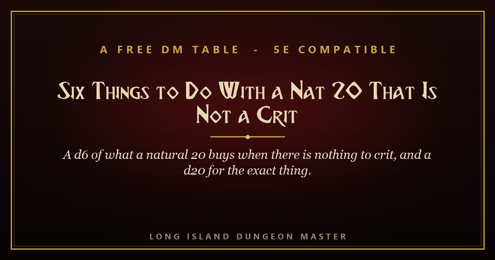

A Free DM Table · Long Island Dungeon Master
A d6 of what a natural 20 buys when there is nothing to crit, and a d20 for the exact thing when you need it right now.

One print-ready PDF, six pages, with the d6 whole on one page and the card alone on its own. No account, no app. Yours to keep.
Or open the Table KeeperThe same two tables, running. Both roll in the browser, so the answer is one tap away while the die is still on the table. Offline, no login. It also installs into Gnasher’s Grimoire.
A player rolls a natural 20 on a Persuasion check, the table looks up, and you say "great, he agrees," which is what you were going to say for a 14. Nothing is broken there. A crit is an attack-roll thing, and outside of that a 20 is a 20 plus your modifier. But nobody at your table is thinking about the rules when that die stops moving, and a 20 the world does not answer teaches them to stop looking up. This is a d6 of six things to hand them instead, each one a shape that fits any check your table just passed: the way in that stays open, the free adjacent fact, the price you refund before you charge it, the person the success recruits, the authorship you hand to the player, and the reputation the world writes down. Plus a d20 for the object itself, in four bands of five, for the nights you cannot think of one. Nothing here takes the success back, nothing asks for a second roll, and no row needs a rule your table does not already have. There is a card with the whole thing on one printable page. Free to use at your table and in your own material under CC BY 4.0.
Three, picked at random.
d6, 5. The player says what it looked like. Hand the authorship across the table. "You did it. Tell me how." Whatever they say is true from that moment, including the half of it you would never have thought of, and you write it down and use it four sessions later. This one is free and it is the one they remember.
d20, 10. It works twice. Whatever they just did will work one more time if they do it the same way. Tell them so, then watch them build an hour of planning on top of it.
d20, 20. The wrong person hears. All of the above, and one more thing. It reached somebody who now has to do something about it. Not tonight. It is moving.
The free Dungeon Master companion on itch.io: your reference, your rolls and your trackers open on the screen while you play. The Table Keeper above installs straight into it.
Get it on itch →The same Grimoire, running in this browser. Nothing to install, nothing to sign up for.
Open it →The free signup gift: hand-made tables that make any session better. No AI slop, yours to keep.
Grab it →The Keeper of Halcyon Light, a complete free one-shot you run from your browser. See what a whole Adventure Keeper feels like.
Open it →Long Island Dungeon Master
The adventures are mine. 30+ years of real tables. Compatible with fifth edition. Portions derived from the SRD 5.1, © Wizards of the Coast LLC, under CC-BY-4.0. Six Things to Do With a Nat 20 That Is Not a Crit is original © Long Island Dungeon Master, free to use at your table and in your own work under CC BY 4.0.